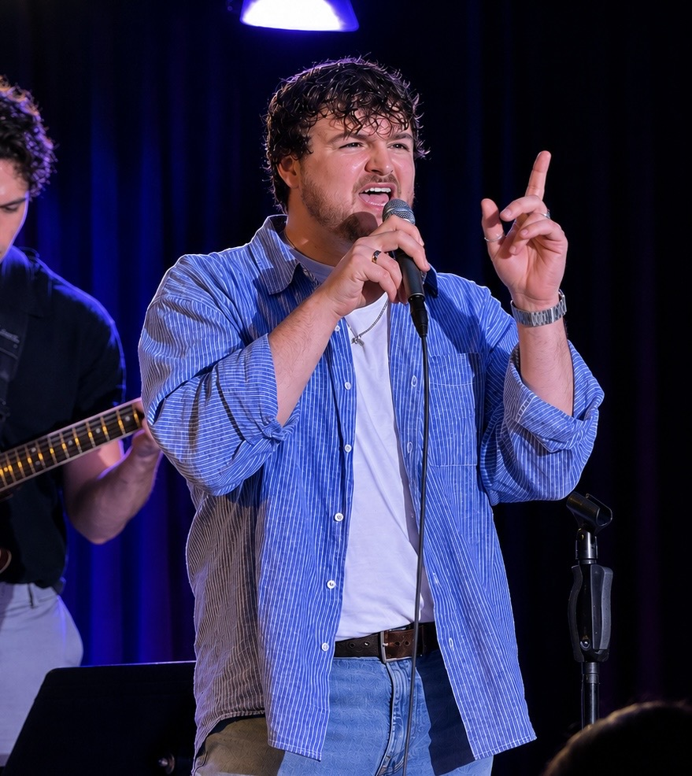

Performer profile
Tenor based in New York City
Hair: Dirty blonde
Eyes: Brown
Height: 5′10″
Portfolio Résumé
A growing collection of performance, creative work, and professional experience from Brynden Foster.
Explore the résuméArtist portrait
Creative range
Brynden is a multidisciplinary performer drawn to honest storytelling, expressive collaboration, and the details that make a moment memorable. This page is designed to grow with his credits, media, and professional résumé.


Professional overview
Performer profile
Hair: Dirty blonde
Eyes: Brown
Height: 5′10″
Training
Full résumé
Open or save a printable copy of Brynden’s current theatre résumé.
View résumé PDFProfessional theatre
RoleCompanySelected theatre
RoleCompanyFor bookings, auditions, or collaborations:
Start a conversation